Project 05 — City Vision
Hakodate Summer Capital
観光施策ではなく、都市ビジョン。
函館を、日本の「避暑首都」として再定義する。
Climate Advantage
なぜ函館は"住める避暑都市"なのか
近年は函館も暑い日が増えています。しかし、2024〜2025年の実績でも、7〜8月の平均気温は約24〜25℃にとどまり、東京・京都を大きく下回ります。
最近の暑い夏でも、函館は本州主要都市より明確に涼しい——これは実績データが示す事実です。
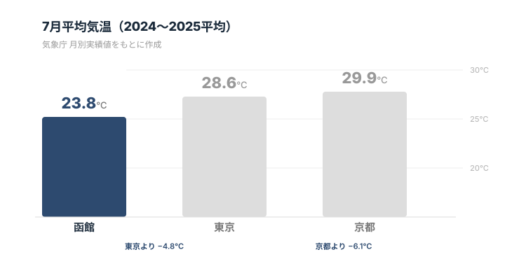
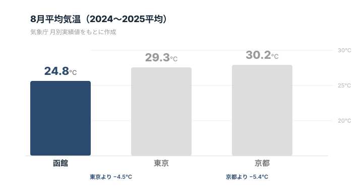
年別の詳細データを見る
| 函館 | 東京 | 京都 | |
|---|---|---|---|
| 7月 2024 | 22.8℃ | 28.7℃ | 29.4℃ |
| 7月 2025 | 24.8℃ | 28.4℃ | 30.3℃ |
| 8月 2024 | 24.7℃ | 29.0℃ | 30.1℃ |
| 8月 2025 | 24.9℃ | 29.6℃ | 30.2℃ |
※気象庁の2024〜2025年 月別実績値をもとに作成
最近の暑い夏でも、函館は東京より約5℃、京都より約6℃涼しい。
直近2年平均でも、函館の7〜8月は東京より約4.5〜4.8℃、京都より約5.4〜6.1℃低い。近年は函館も暑い日が増えているが、それでも本州主要都市と比べると、夏の居住快適性には明確な差がある。この気候差は温暖化が進むほど価値が増す、函館の構造的な資産です。
Emerging Demand
いま、函館は"夏を逃がす都市"として選ばれ始めている
日本の夏は、もはや「旅行の季節」ではなく、生活そのものを見直す季節になりつつあります。
猛暑と熱帯夜が常態化するなかで、夏の数週間だけでも涼しい場所で過ごしたい、東京圏との二拠点で暮らしたい——そう考える人は確実に増えています。
函館はその候補地として、すでに現実味を帯びています。
海があり、風が通り、都市機能があり、新幹線でのアクセスも良い。観光地である前に、「夏に人が暮らしたくなる都市」としての条件を備えています。
外部から見た函館の評価
テレビ朝日の報道
玉川徹氏が函館を緊急取材した番組では、函館は観測開始以来150年以上で猛暑日がわずか1日しかないことが紹介されました。東京との大きな気温差とともに、二地域居住や移住相談が増えている実情も取り上げられています。
函館出身の著名人の発信
GLAYのTERU氏は、年間の約3分の1を函館で過ごしていると公に発信し、その過ごしやすさを自ら語っています。また、松岡昌宏氏も東京と函館の二拠点生活を公言しています。函館の夏居住の快適さは、実際に暮らす人の言葉で広がり始めています。
これは偶然の注目ではありません。猛暑化が進む日本において、函館のように夏季平均24〜25℃で都市機能を備えた場所は極めて限られています。だからこそ函館は、単なる避暑地ではなく、日本の"Summer Capital"を目指せる都市です。
函館は、夏に訪れる街から、夏に暮らす街へ進化できる。
Why City Vision
なぜ「観光施策」ではなく「都市ビジョン」なのか
函館観光の構造課題は、個別の施策を重ねるだけでは解決しません。
「函館とは何の街か」という問いへの答えが必要です。
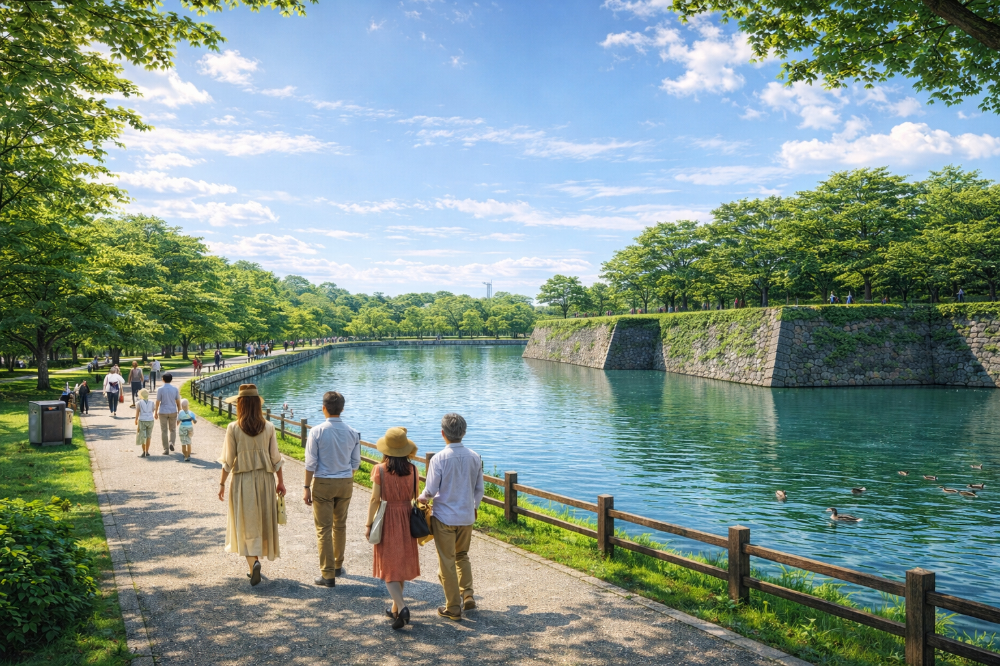
Fig.1 — 函館の夏。涼しい気候、海、緑、歴史的街並みが共存する。
Summer Capitalは、その問いに対する一つの答えです。
「日本で最も快適な夏を過ごせる都市」という都市アイデンティティの提案。
この都市ビジョンは、他の4施策（Night Economy、Goryokaku 2.0、
Jomon Experience、Experience Liner）の上位概念として機能し、
個別施策に一貫した方向性を与える。
Vision Framework
サマーキャピタル構想
避暑都市宣言を起点に、
4つの都市機能を段階的に整備する。
夏季イベント都市
音楽フェス、アート展、食イベントを夏季に集約。 「函館の夏に行く理由」を創出する。
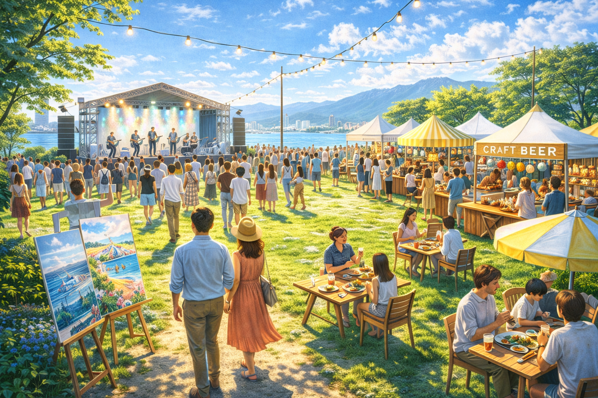
ワーケーション拠点
涼しい環境でのリモートワーク拠点を整備。 コワーキング、長期滞在型アパートメント、企業合宿。
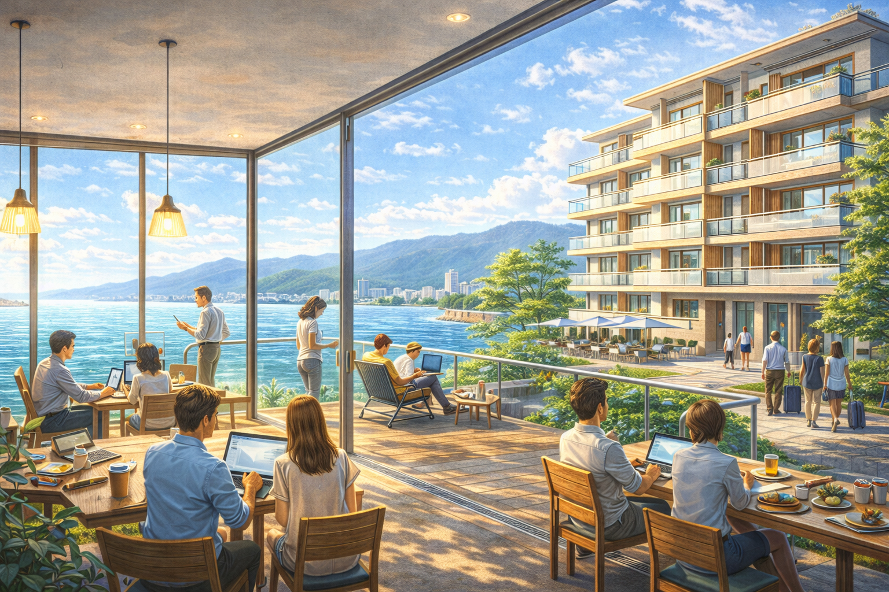
涼夏の夜経済
涼しい夏の夜を活かした屋外消費。ビーチバー、港マーケット、夕暮れクルーズ。
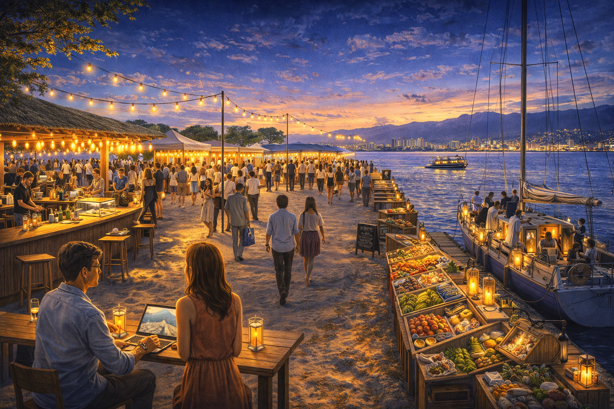
長期滞在モデル
「暮らすように過ごす」2週間滞在パッケージ。 富裕層・シニア・ファミリー向けに設計。
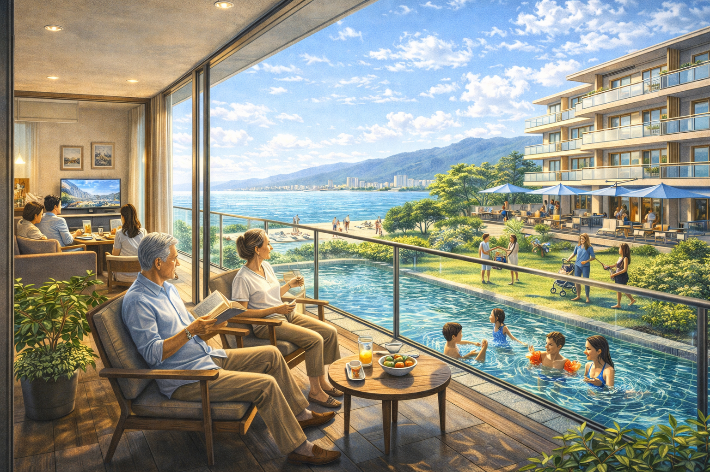
函館は、夏の二拠点生活を考えるうえで現実的な条件がそろっている。人口減少や空き家増加のなかで、比較的手の届きやすい中古住宅が多く、住まいの初期コストを抑えやすい。
加えて、空港から市内中心部までの近さ、新函館北斗駅を介した新幹線アクセスは、首都圏との往来を前提とした暮らしにも適している。気候だけでなく、住まい・移動・滞在の現実性まで備えていることが、函館が避暑都市にとどまらず「夏の生活拠点」になり得る理由です。
Global Context
世界の避暑都市に学ぶ
ニース、バンクーバー、ポートランド。 世界の避暑都市は、「気候」を起点に「文化・食・体験」を重ね、 都市ブランドを確立してきた。
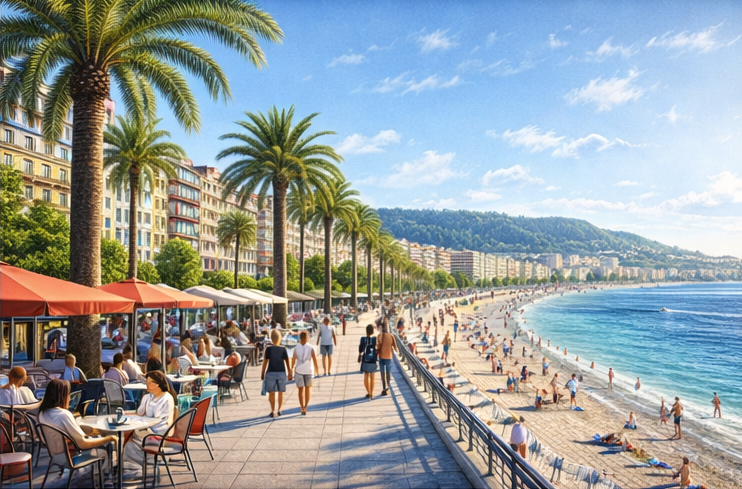
ニース（フランス）
地中海性気候を基盤に、アート・映画祭・美食で「南仏の首都」を確立。 夏季人口が通常の3倍に達する。
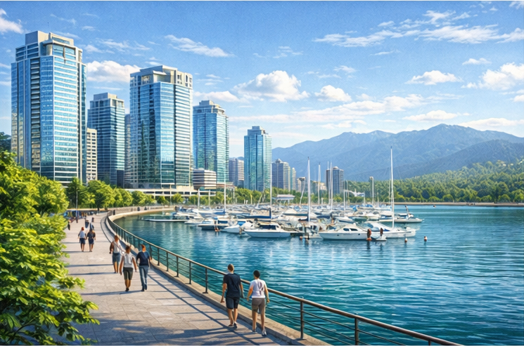
バンクーバー（カナダ）
夏季平均22〜23℃の涼しさと自然環境で、 IT企業のサマーオフィス誘致に成功。
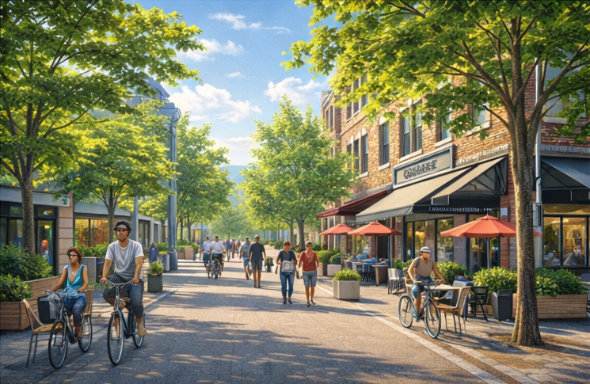
ポートランド（米国）
食文化・クラフトビール・アウトドアを統合し、 「住みたい都市」ブランドを確立。
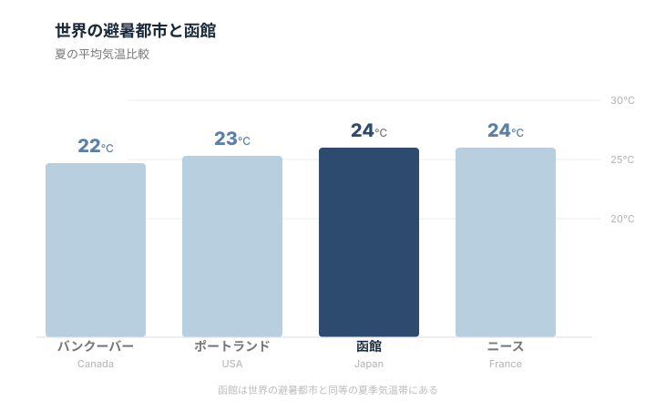
函館にはこれらの都市と同等、あるいはそれ以上の資源がある。 気候優位、海・山の自然、歴史的建築、食文化、世界遺産。 足りないのは、これらを「避暑都市」として束ねる戦略だけです。
Integration
他施策との連携構造
Summer Capitalは単独の施策ではなく、 他の4施策を束ねる上位の考え方として機能します。
Night Economy
涼しい夏の夜を活かした消費設計
Goryokaku 2.0
夏季の長時間滞在拠点として機能
Jomon Experience
夏季長期滞在者向けの体験コンテンツ
Experience Liner
避暑都市へのアクセス体験化
Summer Capitalを上位概念とした施策連携構造